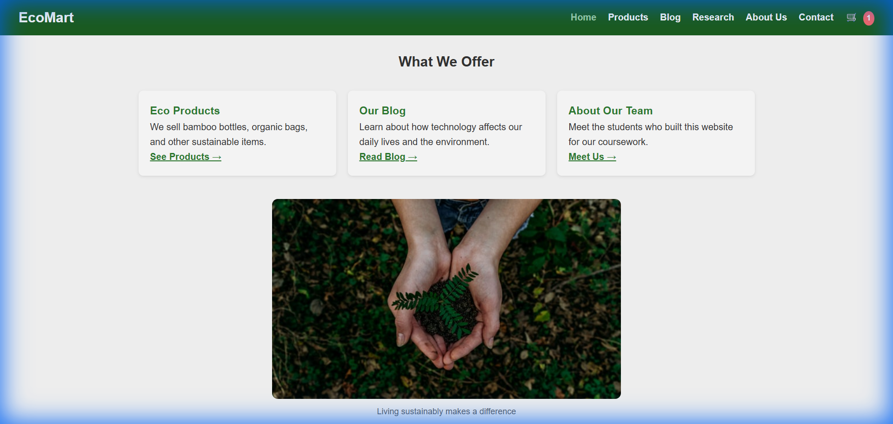
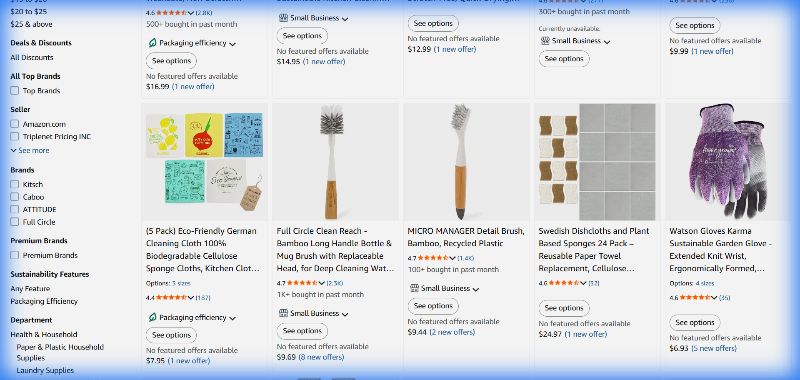
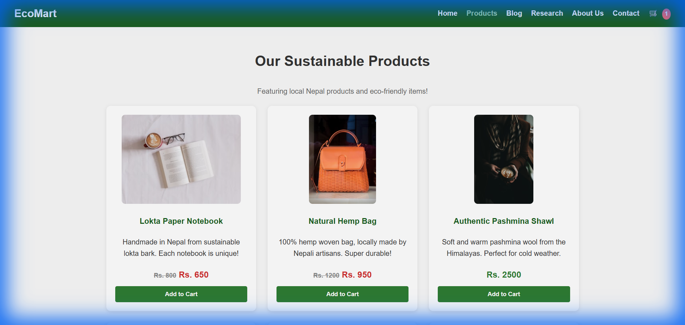
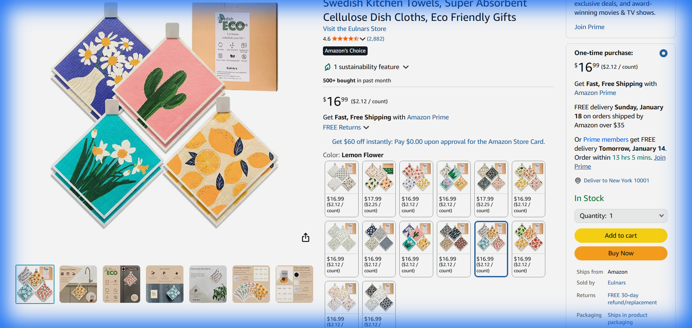
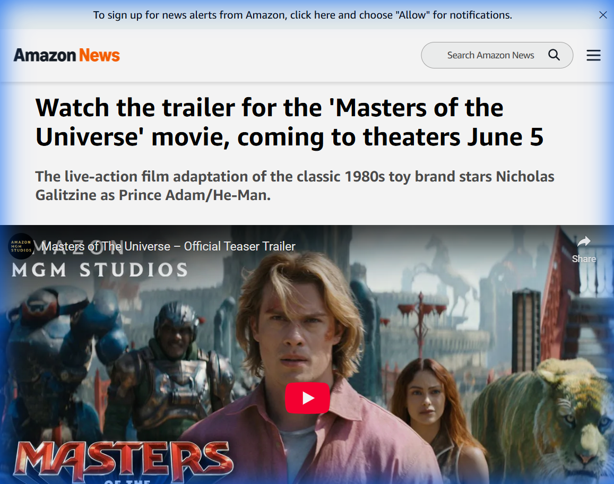
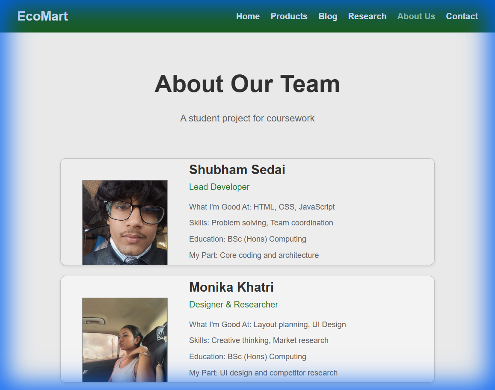
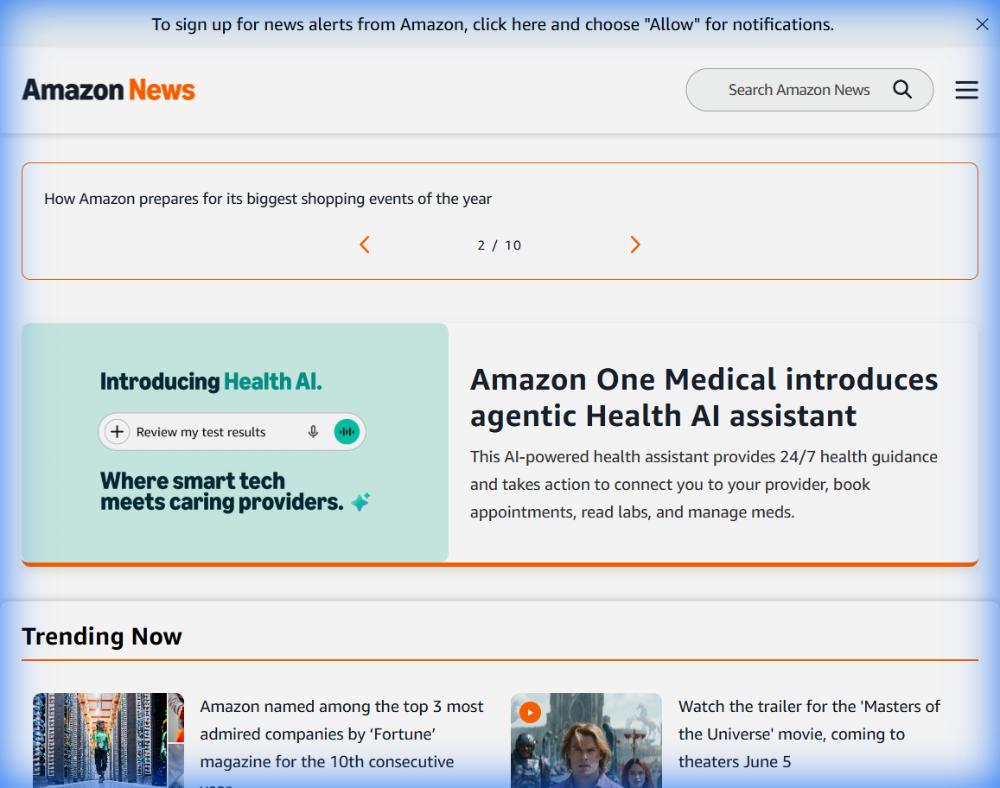

"In this section, we conduct a comprehensive comparative analysis of leading e-commerce websites for
sustainable and eco-friendly products.
Our research examines these platforms based on visual design, user interface, features, and various
functional elements that contribute to their success.
The digital revolution has transformed retail, making it easier than ever for customers to purchase
sustainable products from the comfort of their homes. With countless options available, consumers
naturally gravitate
toward platforms that offer superior usability and experience."
Research Objectives
Identify strengths and weaknesses of current e-commerce platforms
Analyze user experience patterns that drive engagement
Evaluate visual design elements that enhance product appeal
Provide actionable insights for e-commerce optimization
Analysis Criteria
User Experience (UX)
Ease of use, accessibility, and personalization features that enhance the shopping journey.
User Interface (UI)
Effectiveness of search functionality, buttons, and interactive elements.
Visual Design
Layout structure, color schemes, imagery quality, display aesthetics.
1. Homepage Design Analysis

Our Implementation

Reference Inspiration
Key Observations
Minimalist design with clear visual hierarchy
Prominent featured products with high-quality imagery
Simplified navigation compared to inspiration source
Improvements Made
Reduced visual clutter from original inspiration
Added clear call-to-action buttons for better UX
Implemented responsive welcome section for all devices
2. Product Page Analysis

Our Implementation

Reference Inspiration
Key Observations
Clear pricing and availability information
Grid-based layout for easy product browsing
Interactive hover effects on product cards
Improvements Made
Added dynamic sale badges with pulse animations
Implemented a JS-driven Modal for detailed product info
Integrated real-time cart counter in the header
3. Blog Page Analysis
Our Implementation

Reference Inspiration
Key Observations
Engaging content layout with card-based design
Focus on educational sustainability content
Clean typography for long-form reading
Improvements Made
Implemented 'Read More' expansion without page reloads
Added dynamic theme toggling (Dark Mode)
Better categorization of sustainable living tips
4. About Us Page Analysis

Our Implementation

Reference Inspiration
Key Observations
Team profiles with focus on skills and mission
Consistent branding and eco-friendly color palette
 Our Implementation
Our Implementation